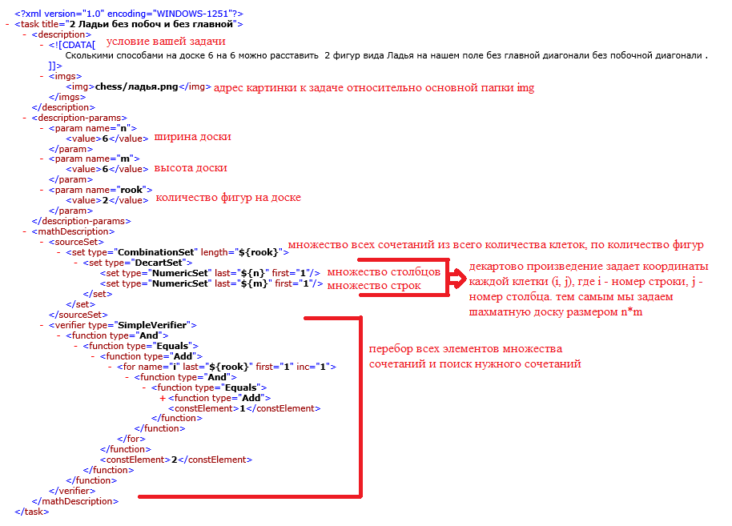
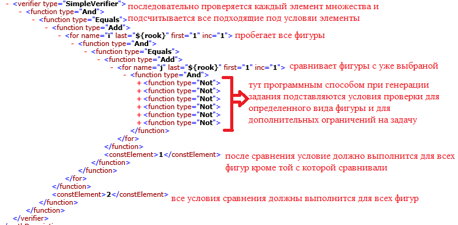
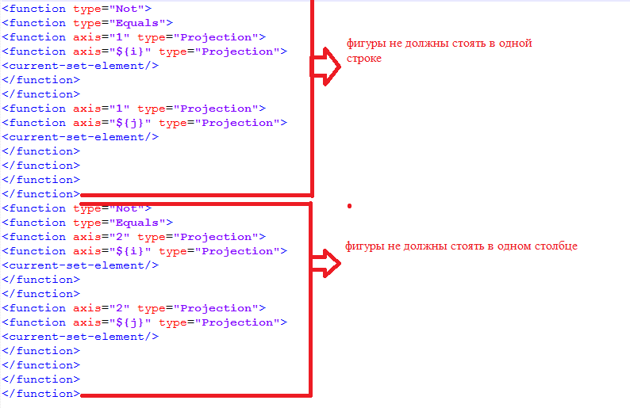
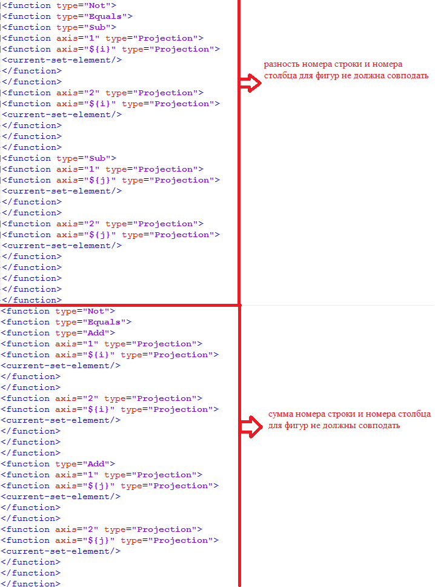
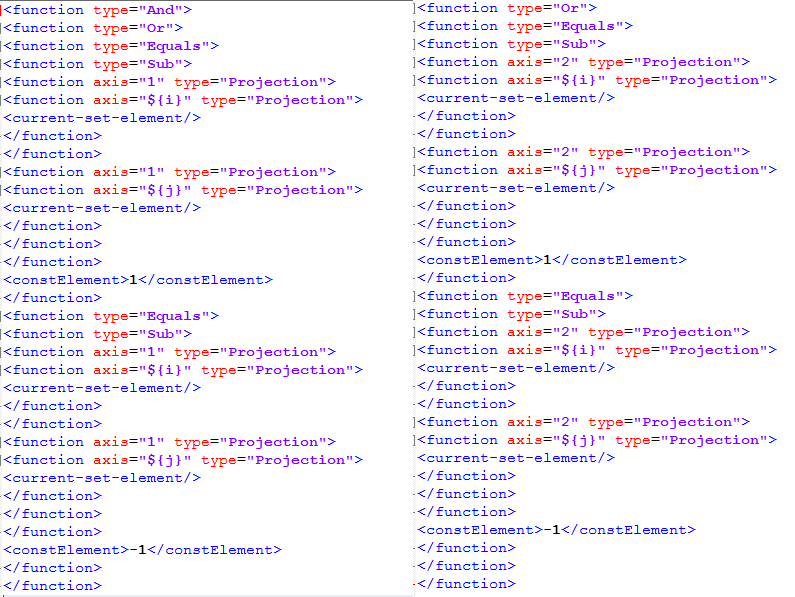
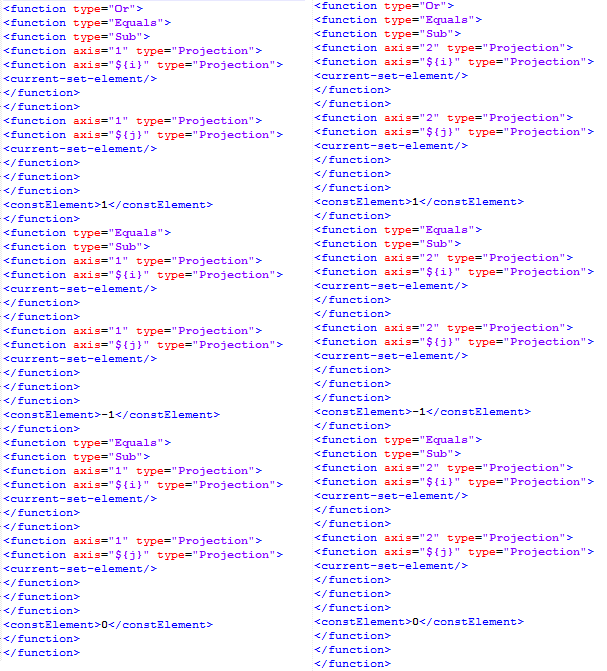

- Операционная система: Windows/Linux
- Необходимые пакеты: Java SE Runtime Environment
- Введите интересное название своей задачи.
- Вы можете выбрать условие для бьющих фигур, тогда задача будет о расстановке фигур, которые могут бить друг друга. Если вы хотите, чтобы задача была про фигуры которые не бьют друг друга, то оставьте флажок без изменений.
- Выберите размеры доски. Рекомендую выбирать не большие размеры, так как программа wisetasks создана для перебора всех вариантов для поиска подходящих к условию решений. Лучше выбирать значения так что бы количество клеток на доске не превышало 64, потому что для 8 фигур и 64 клеток существует 4 426 165 368 вариантов расстановок и программа будет очень долго перебирать все.
- Выберите вид фигуры и количество таких фигур на доске.
- Дополнительно вы можете усложнить задание и выбрать дополнительные условия, но для того чтобы их выбрать нужно, чтобы доска была квадратная, то есть высота = ширине.
- Сгенерируйте условие. В поле сгенерированный текст появится условие вашего задания, при желании его можно изменить. Так же в поле картинок автоматически выберется картинка фигуры, которую вы выбрали.
- Если вас устраивает ваша задача, то нажмите кнопку сохранить задачу в стандартный задачник, если нет то нажмите кнопку удалить все условия и вернитесь к пункту 1).
- Скачать модуль
- Открыть файл ProtocolVisualizer.jar
Самопроверяемые задачи по комбинаторике
Программа предназначена для визуализации протоколов, основанных на криптосистемах с открытой частью ключа. В программе представлены стандартные протоколы, обсужденные на лекциях.
Системные требования
Инструкции
Вы можете открыть свои задачу в основном редакторе задач. Этот редактор можно найти в главном меню программы. Для начала стоит прочитать файл Составление задач в основном редакторе, для того чтобы было понятно какие функции используются в условиях для фигур.
 Условие для ладей:
Условие для слонов:

Условие для ферзя будет складываться из условий для ладьи и ферзя.
Условие для коня:
Условие для пешки:
Условия для короля:
